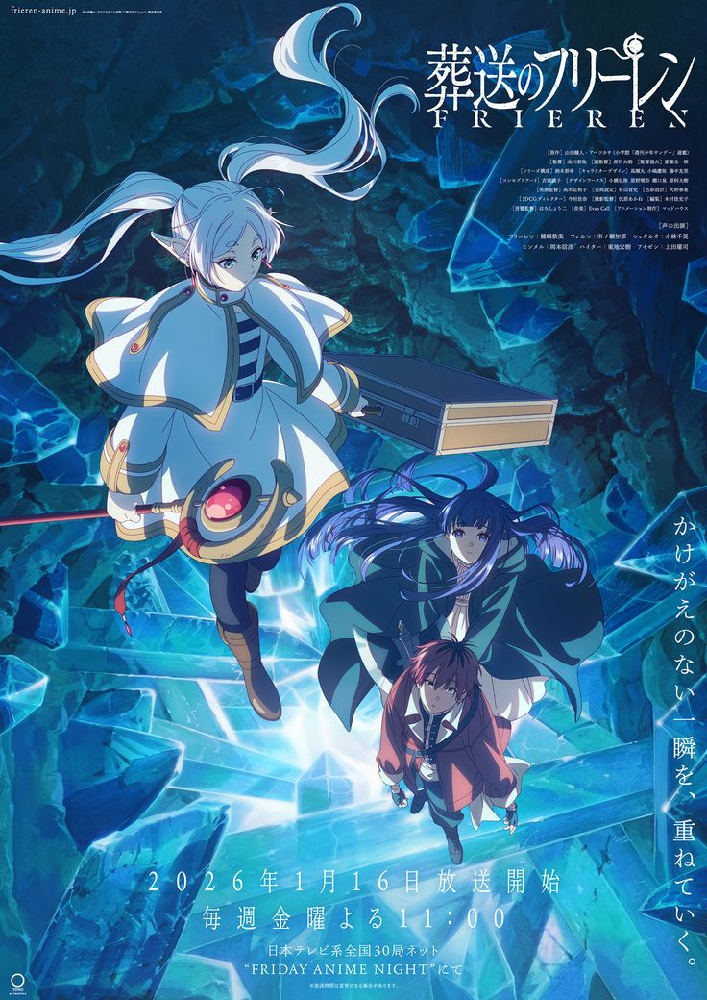
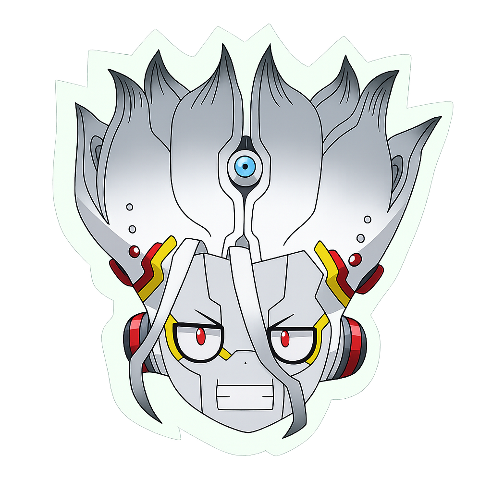

AniDomain

// Sypnosis
After the party of heroes defeated the Demon King, they disbanded and went their separate ways. Decades later, the elf mage Frieren is the only one who has yet to age. When her former comrade Himmel passes away, she sets off on a new journey — not to save the world, but to understand the people she travelled with and what it truly means to know someone before they're gone.

Why you might love this:
If you're drawn to anime that makes you feel something quietly — not through action or plot twists, but through the weight of time and memory — Frieren is for you. It's the kind of series that stays with you long after you finish it. Think less "what happens next" and more "what does it all mean."
Fans of this also watched:
// Reviews
Void_hunter234
2days Ago
One of the most beautifully written anime I've ever seen. The pacing is slow but intentional — every quiet moment carries weight. Frieren as a character is unlike anything else.
DookieMan_12
2days Ago
Made me cry three times. The way it explores grief and time is unmatched. If you haven't watched this yet, your loss man
Status
Completed
Episodes
28
Duration
24 min/ep
Studio
Madhouse
Aired
Sep2023
Season
Fall 2023
Rating
★ 9.4 / 10
Where to watch
Crunchyroll Netflix Funanimation Animepahe AniWatch 9Anime